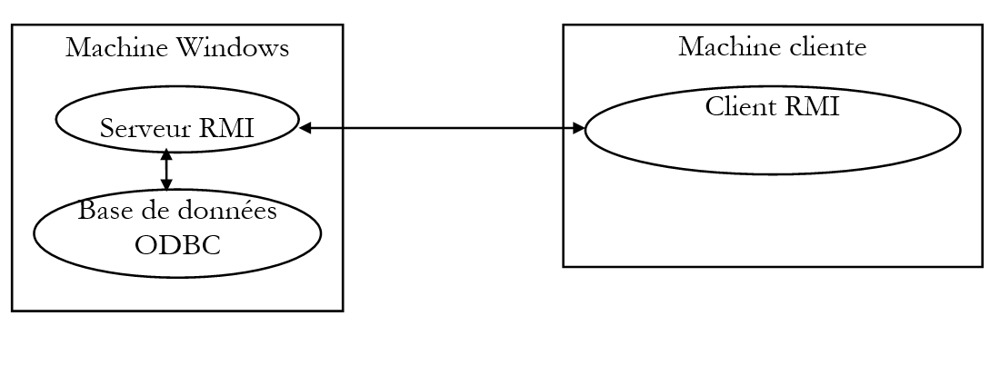

9. JAVA RMI
9.1. Einführung
Wir haben gesehen, wie man Netzwerkanwendungen mithilfe von Kommunikationswerkzeugen namens Sockets erstellt. In einer auf diesen Werkzeugen basierenden Client-Server-Anwendung ist die Verbindung zwischen Client und Server das Kommunikationsprotokoll, das sie für die Kommunikation verwenden. Die beiden Anwendungen können in verschiedenen Sprachen geschrieben sein: beispielsweise Java für den Client, Perl für den Server oder eine beliebige andere Kombination. Wir haben also tatsächlich zwei unterschiedliche Anwendungen, die durch ein beiden bekanntes Kommunikationsprotokoll verbunden sind. Darüber hinaus ist der Netzwerkzugriff über Sockets für eine Java-Anwendung nicht transparent: Sie muss die Socket-Klasse verwenden, eine Klasse, die speziell zur Verwaltung dieser als Sockets bezeichneten Kommunikationswerkzeuge entwickelt wurde.
Java RMI (Remote Method Invocation) ermöglicht es Ihnen, Netzwerkanwendungen mit den folgenden Eigenschaften zu erstellen:
- Client/Server-Anwendungen sind Java-Anwendungen an beiden Enden der Kommunikation
- Der Client kann Objekte auf dem Server so nutzen, als wären sie lokal
- Die Netzwerkschicht wird transparent: Anwendungen müssen sich keine Gedanken darüber machen, wie Informationen von einem Punkt zum anderen transportiert werden.
Der letzte Punkt ist ein Faktor für die Portabilität: Sollte sich die Netzwerkschicht einer RMI-Anwendung ändern, müsste die Anwendung selbst nicht neu geschrieben werden. Es sind die RMI-Klassen der Java-Sprache, die an die neue Netzwerkschicht angepasst werden müssten.
Das Prinzip der RMI-Kommunikation ist wie folgt:
- Eine Standard-Java-Anwendung wird auf Rechner A geschrieben. Sie fungiert als Server. Dazu werden einige ihrer Objekte auf Rechner A, auf dem die Anwendung läuft, „veröffentlicht“ und werden so zu Diensten.
- Eine klassische Java-Anwendung wird auf Rechner B geschrieben. Sie fungiert als Client. Sie hat Zugriff auf die auf Rechner A veröffentlichten Objekte/Dienste; das heißt, über eine Remote-Referenz kann sie diese so manipulieren, als wären sie lokal. Dazu muss sie die Struktur des Remote-Objekts kennen, auf das sie zugreifen möchte (Methoden und Eigenschaften).
9.2. Lernen wir dies anhand eines Beispiels
Die Theorie hinter der RMI-Schnittstelle ist nicht einfach. Um die Sache zu verdeutlichen, werden wir Schritt für Schritt durch den Prozess der Erstellung einer Client-Server-Anwendung unter Verwendung des RMI-Pakets von Java gehen. Wir verwenden eine Anwendung, die in vielen Büchern über RMI zu finden ist: Der Client ruft eine einzelne Methode eines Remote-Objekts auf, die dann eine Zeichenkette zurückgibt. Hier stellen wir eine leichte Abwandlung vor: Der Server gibt das, was der Client ihm sendet, unverändert zurück. Eine solche Anwendung haben wir in diesem Buch bereits vorgestellt, allerdings eine, die auf Sockets basiert.
9.2.1. Die Serveranwendung
9.2.1.1. Schritt 1: Die Objekt-/Server-Schnittstelle
Ein Remote-Objekt ist eine Klasseninstanz, die die im Paket java.rmi definierte Remote-Schnittstelle implementieren muss. Die Methoden des Objekts, auf die remote zugegriffen werden kann, sind diejenigen, die in einer von der Remote-Schnittstelle abgeleiteten Schnittstelle deklariert sind:
import java.rmi.*;
// remote interface p
ublic interface interEcho extends Remote{
public String echo(String msg) throws java.rmi.RemoteException
; }
Hier deklarieren wir eine interEcho-Schnittstelle, die eine echo-Methode als remote zugänglich deklariert. Diese Methode kann eine Ausnahme der Klasse RemoteException auslösen, die alle netzwerkbezogenen Fehler umfasst.
9.2.1.2. Schritt 2: Schreiben des Server-Objekts
Im nächsten Schritt definieren wir die Klasse, die die zuvor definierte Remote-Schnittstelle implementiert. Diese Klasse muss von der Klasse „UnicastRemoteObject“ abgeleitet sein, die Methoden bereitstellt, die den Aufruf von Remote-Methoden ermöglichen.
import java.rmi.*;
import java.rmi.server.*;
import java.net.*;
// class implementing remote echo
public class srvEcho extends UnicastRemoteObject implements interEcho{
// manufacturer
public srvEcho() throws RemoteException{
super();
}// manufacturer end
// method performing the echo
public String echo(String msg) throws RemoteException{
return "[" + msg + "]";
}// fine echo
}// end of class
In der vorherigen Klasse finden wir:
- die Methode, die das Echo ausführt
- einen Konstruktor, der nichts anderes tut, als den Konstruktor der übergeordneten Klasse aufzurufen. Er dient dazu, zu deklarieren, dass eine RemoteException ausgelöst werden kann.
Wir werden eine Instanz dieser Klasse mit einer main-Methode erstellen. Damit ein Objekt/Dienst von außen zugänglich ist, muss es erstellt und im Verzeichnis der extern zugänglichen Objekte registriert werden. Ein Client, der auf ein Remote-Objekt zugreifen möchte, geht wie folgt vor:
- Er kontaktiert den Verzeichnisdienst auf dem Rechner, auf dem sich das gewünschte Objekt befindet. Dieser Verzeichnisdienst läuft auf einem Port, den der Client kennen muss (standardmäßig 1099). Der Client fordert vom Verzeichnis eine Referenz auf ein Objekt/einen Dienst an und gibt dessen Namen an. Wenn dieser Name einem Objekt/Dienst im Verzeichnis entspricht, gibt das Verzeichnis eine Referenz an den Client zurück, über die der Client mit dem Remote-Objekt/Dienst kommunizieren kann.
- Von diesem Zeitpunkt an kann der Client dieses Remote-Objekt so nutzen, als wäre es lokal
Zurück zu unserem Server: Wir müssen ein Objekt vom Typ srvEcho erstellen und es im Verzeichnis der extern zugänglichen Objekte registrieren. Diese Registrierung erfolgt mithilfe der Methode rebind der Klasse *Naming*:
wobei
name: der Name, der dem Remote-Objekt zugeordnet wird
obj: das Remote-Objekt
Unsere srvEcho-Klasse sieht daher wie folgt aus:
import java.rmi.*;
import java.rmi.server.*;
import java.net.*;
// class implementing remote echo
public class srvEcho extends UnicastRemoteObject implements interEcho{
// manufacturer
public srvEcho() throws RemoteException{
super();
}// manufacturer end
// method performing the echo
public String echo(String msg) throws RemoteException{
return "[" + msg + "]";
}// fine echo
// service creation
public static void main (String arg[]){
try{
srvEcho serveurEcho=new srvEcho();
Naming.rebind("srvEcho",serveurEcho);
System.out.println("Serveur d’écho prêt");
} catch (Exception e){
System.err.println(" Erreur " + e + " lors du lancement du serveur d’écho ");
}
}// hand
}// end of class
Beim Lesen des vorherigen Programms scheint es, als würde es unmittelbar nach dem Erstellen und Registrieren des Echo-Dienstes beendet werden. Dies ist jedoch nicht der Fall. Da die Klasse srvEcho von der Klasse *UnicastRemoteObject* abgeleitet ist, läuft das erstellte Objekt unbegrenzt weiter: Es wartet auf Client-Anfragen an einem anonymen Port, d. h. einem Port, der vom System je nach den Umständen ausgewählt wird. Die Erstellung des Dienstes erfolgt asynchron: Im Beispiel erstellt die main-Methode den Dienst und setzt die Ausführung fort; sie zeigt „Echo-Server bereit“ an.
9.2.1.3. Schritt 3: Kompilieren der Serveranwendung
Nun können wir unseren Server kompilieren. Wir kompilieren die Datei „interEcho.java“ aus der Schnittstelle „interEcho“ sowie die Datei „srvEcho.java“ aus der Klasse „srvEcho“. Dabei erhalten wir die entsprechenden .class-Dateien: „interEcho.class“ und „srvEcho.class“.
9.2.1.4. Schritt 4: Schreiben des Clients
Wir schreiben einen Client, der die URL des Echo-Servers als Parameter entgegennimmt und
- eine über die Tastatur eingegebene Zeile liest
- sie an den Echo-Server sendet
- die Antwort anzeigt
- kehrt zu Schritt 1 zurück und stoppt, wenn die eingegebene Zeile „end“ lautet.
Dies führt zu folgendem Client:
import java.rmi.*;
import java.io.*
; public class cltEch
o { public static void main(String a
rg[]){ // syntax : cltEcho URLService
// argument verification
if(arg.length!=1){
System.err.println("Syntaxe : pg url_service_rmi");
System.exit(1);
}
// client-server dialogue
String urlService=arg[0];
BufferedReader in=null;
String msg=null;
String reponse=null;
interEcho serveur=null;
try{
// open keyboard flow
in=new BufferedReader(new InputStreamReader(System.in));
// service location
serveur=(interEcho) Naming.lookup(urlService);
// loop for reading msg to be sent to echo server
System.out.print("Message : ");
msg=in.readLine().toLowerCase().trim();
while(! msg.equals("fin")){
// send msg to server and receive response
reponse=serveur.echo(msg);
// follow-up
System.out.println("Réponse serveur : " + reponse);
// next msg
System.out.print("Message : ");
msg=in.readLine().toLowerCase().trim();
}// while
// it's over
System.exit(0);
// error management
} catch (Exception e){
System.err.println("Erreur : " + e);
System.exit(2);
}// try
}// hand
}// class
An diesem Client ist nichts Besonderes, abgesehen von der Anweisung, die eine Serverreferenz abruft:
Erinnern Sie sich daran, dass unser Echo-Dienst im Dienstverzeichnis des Rechners, auf dem er sich befindet, mit folgendem Befehl registriert wurde:
Naming.rebind("srvEcho",serveurEcho);
Der Client verwendet daher ebenfalls eine Methode der Naming-Klasse, um eine Referenz auf den Server zu erhalten, den er nutzen möchte. Die verwendete Lookup-Methode nimmt die URL des angeforderten Dienstes als Parameter entgegen. Diese URL hat die Form einer Standard-URL:
wobei
rmi: optional – RMI-Protokoll
machine: Name oder IP-Adresse des Rechners, auf dem der Echo-Server läuft – optional, Standard ist localhost.
port: Listening-Port des Verzeichnisdienstes dieses Rechners – optional, Standardwert 1099
service_name: Name, unter dem der angeforderte Dienst registriert wurde (in unserem Beispiel srvEcho)
Als Rückgabewert wird eine Instanz der Remote-Schnittstelle interEcho zurückgegeben. Angenommen, Client und Server befinden sich nicht auf demselben Rechner, muss beim Kompilieren des Clients cltEcho.java die Datei interEcho.class – das Ergebnis der Kompilierung der Remote-Schnittstelle interEcho – im selben Verzeichnis vorhanden sein; andernfalls tritt an den Zeilen, die auf diese Schnittstelle verweisen, ein Kompilierungsfehler auf.
9.2.1.5. Schritt 5: Erstellen der für die Client-Server-Anwendung erforderlichen .class-Dateien
Um klar zwischen den serverseitigen und den clientseitigen Komponenten zu unterscheiden, werden wir den Server im Verzeichnis echo\server und den Client im Verzeichnis echo\client ablegen.
Das Server-Verzeichnis enthält die folgenden Quelldateien:
E:\data\java\RMI\echo\serveur>dir *.java
INTERE~1 JAV 158 09/03/99 15:06 interEcho.java
SRVECH~1 JAV 759 09/03/99 15:07 srvEcho.java
Nach der Kompilierung dieser beiden Quelldateien erhalten wir die folgenden .class-Dateien:
E:\data\java\RMI\echo\serveur>dir *.class
SRVECH~1 CLA 1 129 09/03/99 15:58 srvEcho.class
INTERE~1 CLA 256 09/03/99 15:58 interEcho.class
Im Client-Verzeichnis finden wir die folgende Quelldatei:
sowie die Datei interEcho.class, die bei der Server-Kompilierung generiert wurde:
Nach der Kompilierung der Quelldatei erhalten wir die folgenden .class-Dateien:
E:\data\java\RMI\echo\client>dir *.class
CLTECH~1 CLA 1 506 09/03/99 16:08 cltEcho.class
INTERE~1 CLA 256 09/03/99 15:59 interEcho.class
Wenn wir versuchen, den cltEcho-Client auszuführen, erhalten wir folgende Fehlermeldung:
E:\data\java\RMI\echo\client>j:\jdk12\bin\java cltEcho rmi://localhost/srvEcho
Erreur : java.rmi.UnmarshalException: error unmarshalling return; nested exception is:
java.lang.ClassNotFoundException: srvEcho_Stub
Wenn Sie versuchen, den srvEcho-Server auszuführen, erhalten Sie die folgende Fehlermeldung:
E:\data\java\RMI\echo\serveur>j:\jdk12\bin\java srvEcho
Erreur java.rmi.StubNotFoundException: Stub class not found: srvEcho_Stub; nested exception is:
java.lang.ClassNotFoundException: srvEcho_Stub lors du lancement du serveur d’écho
In beiden Fällen meldet die Java Virtual Machine, dass sie die Klasse srvEcho_stub nicht finden konnte. Tatsächlich haben wir noch nie zuvor von dieser Klasse gehört. Im Client wurde der Server mit der folgenden Anweisung gefunden:
Hier ist urlService die Zeichenfolge rmi://localhost/srvEcho mit
RMI: RMI-Protokoll
Localhost: der Rechner, auf dem der Server läuft – in diesem Fall derselbe Rechner wie der Client. Die Syntax lautet normalerweise Rechner:Port. Wenn kein Port angegeben wird, wird standardmäßig Port 1099 verwendet. Der Verzeichnisdienst des Servers hört auf diesem Port.
srvEcho: Dies ist der Name des spezifischen Dienstes, der angefordert wird
Bei der Kompilierung wurden keine Fehler gemeldet. Die Datei interEcho.class für die Remote-Schnittstelle musste lediglich verfügbar sein.
Zur Laufzeit benötigt die virtuelle Maschine die Datei srvEcho_stub.class, wenn der angeforderte Dienst der srvEcho-Dienst ist; generell wird für einen Dienst X die Datei X_stub.class benötigt. Diese Datei ist nur zur Laufzeit erforderlich, nicht während der Client-Kompilierung. Dasselbe gilt für den Server. Was genau ist also diese Datei?
Auf dem Server befindet sich die Klasse srvEcho.class, die unser Remote-Objekt bzw. -Dienst ist. Der Client benötigt, auch wenn er diese Klasse nicht benötigt, dennoch eine Art Abbild davon, um mit ihr zu kommunizieren. Tatsächlich sendet der Client seine Anfragen nicht direkt an das Remote-Objekt: Er sendet sie an sein lokales Abbild srvEcho_stub.class, das sich auf demselben Rechner wie er selbst befindet. Dieses lokale Abbild, srvEcho_stub.class, kommuniziert mit einem ähnlichen Abbild (srvEcho_stub.class), das sich auf dem Server befindet. Dieses Abbild wird aus der .class-Datei des Servers mithilfe eines Java-Tools namens rmic erstellt. Unter Windows lautet der Befehl:
erzeugt aus der Datei „srvEcho.class“ zwei weitere .class-Dateien:
E:\data\java\RMI\echo\serveur>dir *.class
SRVECH~2 CLA 3 264 09/03/99 16:57 srvEcho_Stub.class
SRVECH~3 CLA 1 736 09/03/99 16:57 srvEcho_Skel.class
Hier haben wir die Datei srvEcho_stub.class, die sowohl der Client als auch der Server zur Laufzeit benötigen. Es gibt auch eine Datei srvEcho_Skel.class, deren Zweck derzeit unbekannt ist. Wir kopieren die Datei srvEcho_stub.class in die Client- und Server-Verzeichnisse und löschen die Datei srvEcho_Skel.class. Wir haben nun die folgenden Dateien:
auf der Serverseite:
E:\data\java\RMI\echo\serveur>dir *.class
SRVECH~1 CLA 1 129 09/03/99 15:58 srvEcho.class
INTERE~1 CLA 256 09/03/99 15:58 interEcho.class
SRVECH~1 CLA 3 264 09/03/99 16:01 srvEcho_Stub.class
auf der Client-Seite:
E:\data\java\RMI\echo\client>dir *.class
CLTECH~1 CLA 1 506 09/03/99 16:08 cltEcho.class
INTERE~1 CLA 256 09/03/99 15:59 interEcho.class
SRVECH~1 CLA 3 264 09/03/99 16:01 srvEcho_Stub.class
9.2.1.6. Schritt 6: Ausführen der Client-Server-Echo-Anwendung
Wir sind bereit, unsere Client-Server-Anwendung auszuführen. Zunächst laufen Client und Server auf demselben Rechner. Zunächst müssen wir unsere Serveranwendung starten. Erinnern Sie sich daran, dass dies:
- den Dienst
- und registriert ihn im Dienstverzeichnis des Rechners, auf dem der Echo-Server läuft
Dieser letzte Schritt erfordert einen Registrierungsdienst. Dieser wird mit dem Befehl gestartet:
rmiregistry ist der Registrierungsdienst. Hier wird er im Hintergrund in einem Windows-Eingabeaufforderungsfenster mit dem Befehl „start“ gestartet. Sobald die Registrierung aktiv ist, können wir den Echo-Dienst erstellen und ihn in der Dienstregistrierung registrieren. Auch dieser wird im Hintergrund mit einem „start“-Befehl gestartet:
Der Echo-Server läuft in einem neuen DOS-Fenster und zeigt die angeforderte Ausgabe an:
Jetzt müssen wir nur noch unseren Client starten und testen:
E:\data\java\RMI\echo\client>j:\jdk12\bin\java cltEcho rmi://localhost/srvEcho
Message : msg1
Réponse serveur : [msg1]
Message : msg2
Réponse serveur : [msg2]
Message : fin
9.2.1.7. Client und Server auf zwei verschiedenen Rechnern
Im vorherigen Beispiel befanden sich Client und Server auf demselben Rechner. Nun platzieren wir sie auf verschiedenen Rechnern:
- den Server auf einem Windows-Rechner
- der Client auf einem Linux-Rechner
Der Server wird wie zuvor auf dem Windows-Rechner gestartet. Auf dem Linux-Rechner wurden die .class-Dateien des Clients übertragen:
shiva[serge]:/home/admin/serge/java/rmi/client#
$ dir
total 9
drwxr-xr-x 2 serge admin 1024 Mar 10 10:02 .
drwxr-xr-x 4 serge admin 1024 Mar 10 10:01 ..
-rw-r--r-- 1 serge admin 1506 Mar 10 10:02 cltEcho.class
-rw-r--r-- 1 serge admin 256 Mar 10 10:02 interEcho.class
-rw-r--r-- 1 serge admin 3264 Mar 10 10:02 srvEcho_Stub.class
Der Client wird gestartet:
$ java cltEcho rmi://tahe.istia.univ-angers.fr/srvEcho
Message : msg1
Erreur : java.rmi.ServerException: RemoteException occurred in server thread; nested exception is:
java.rmi.UnmarshalException: error unmarshalling call header; nested exception is:
java.rmi.UnmarshalException: skeleton class not found but required for client version
Wir haben also einen Fehler: Die Java Virtual Machine benötigt offenbar die Datei srvEcho_skel.class, die vom Dienstprogramm rmic generiert wurde, aber bisher noch nicht verwendet wurde. Wir erstellen sie neu und übertragen sie auch auf den Linux-Rechner:
shiva[serge]:/home/admin/serge/java/rmi/client#
$ dir
total 11
drwxr-xr-x 2 serge admin 1024 Mar 10 10:17 .
drwxr-xr-x 4 serge admin 1024 Mar 10 10:01 ..
-rw-r--r-- 1 serge admin 1506 Mar 10 10:02 cltEcho.class
-rw-r--r-- 1 serge admin 256 Mar 10 10:02 interEcho.class
-rw-r--r-- 1 serge admin 1736 Mar 10 10:17 srvEcho_Skel.class
-rw-r--r-- 1 serge admin 3264 Mar 10 10:02 srvEcho_Stub.class
Wir erhalten denselben Fehler wie zuvor... Also überlegen wir es uns noch einmal und lesen die RMI-Dokumentation erneut durch. Schließlich kommen wir zu dem Schluss, dass der Server selbst vielleicht die berühmte Datei srvEcho_Skel.class benötigt. Wir starten dann den Server auf dem Windows-Rechner neu, wobei sowohl die Datei srvEcho_Stub.class als auch die Datei srvEcho_Skel.class vorhanden sind:
E:\data\java\RMI\echo\serveur>dir *.class
SRVECH~1 CLA 1 129 09/03/99 15:58 srvEcho.class
INTERE~1 CLA 256 09/03/99 15:58 interEcho.class
SRVECH~2 CLA 3 264 10/03/99 9:05 srvEcho_Stub.class
SRVECH~3 CLA 1 736 10/03/99 9:05 srvEcho_Skel.class
E:\data\java\RMI\echo\serveur>start j:\jdk12\bin\java srvEcho
Anschließend testen wir den Client erneut auf dem Linux-Rechner, und diesmal funktioniert er:
shiva[serge]:/home/admin/serge/java/rmi/client#
$ dir *.class
-rw-r--r-- 1 serge admin 1506 Mar 10 10:02 cltEcho.class
-rw-r--r-- 1 serge admin 256 Mar 10 10:02 interEcho.class
-rw-r--r-- 1 serge admin 3264 Mar 10 10:02 srvEcho_Stub.class
shiva[serge]:/home/admin/serge/java/rmi/client#
$ java cltEcho rmi://tahe.istia.univ-angers.fr/srvEcho
Message : msg1
Réponse serveur : [msg1]
Message : msg2
Réponse serveur : [msg2]
Message : fin
Wir können daher schlussfolgern, dass auf der Serverseite sowohl die Datei srvEcho_Stub.class als auch die Datei srvEcho_Skel.class vorhanden sein müssen. Auf der Clientseite war bisher nur die Datei srvEcho_Stub.class erforderlich. Sie hatte sich als unverzichtbar erwiesen, als sich Client und Server auf demselben Windows-Rechner befanden. Unter Linux werden wir sie entfernen, um zu sehen, was passiert...
shiva[serge]:/home/admin/serge/java/rmi/client#
$ dir *.class
-rw-r--r-- 1 serge admin 1506 Mar 10 10:02 cltEcho.class
-rw-r--r-- 1 serge admin 256 Mar 10 10:02 interEcho.class
shiva[serge]:/home/admin/serge/java/rmi/client#
$ java cltEcho rmi://tahe.istia.univ-angers.fr/srvEcho
*** Security Exception: No security manager, stub class loader disabled ***
java.rmi.RMISecurityException: security.No security manager, stub class loader disabled
at sun.rmi.server.RMIClassLoader.getClassLoader(RMIClassLoader.java:84)
at sun.rmi.server.MarshalInputStream.resolveClass(MarshalInputStream.java:88)
at java.io.ObjectInputStream.inputClassDescriptor(ObjectInputStream.java)
at java.io.ObjectInputStream.readObject(ObjectInputStream.java)
at java.io.ObjectInputStream.inputObject(ObjectInputStream.java)
at java.io.ObjectInputStream.readObject(ObjectInputStream.java)
at sun.rmi.registry.RegistryImpl_Stub.lookup(RegistryImpl_Stub.java:105)
at java.rmi.Naming.lookup(Naming.java:60)
at cltEcho.main(cltEcho.java:28)
Erreur : java.rmi.UnexpectedException: Unexpected exception; nested exception is:
java.rmi.RMISecurityException: security.No security manager, stub class loader disabled
Wir haben einen interessanten Fehler, der darauf hindeutet, dass die Java Virtual Machine versucht hat, die berüchtigte Stub-Klasse zu laden, dies jedoch aufgrund des Fehlens eines „Security Managers“ nicht geschafft hat. Wir erinnern uns, in der Dokumentation etwas darüber gelesen zu haben. Wir tauchen noch einmal tiefer ein … und stellen fest, dass der Server einen Security Manager erstellen und installieren muss, um den Clients, die das Laden von Klassen anfordern, zu garantieren, dass die Klassen sicher sind. Ohne diesen Security Manager ist das Laden von Klassen unmöglich. Das scheint zu passen: Unser Linux-Client hat die benötigte Datei „srvEcho_stub.class“ vom Server angefordert, und der Server hat dies mit der Begründung abgelehnt, dass kein Security Manager installiert sei. Also ändern wir den Code der Hauptfunktion des Servers wie folgt:
// service creation
public static void main (String arg[]){
// installation of a security manager Sy
stem.setSecurityManager(new RMISecurityManager());
// service launch and registration
try{
srvEcho serveurEcho=new srvEcho();
Naming.rebind("srvEcho",serveurEcho);
System.out.println("Serveur d’écho prêt");
} catch (Exception e){
System.err.println(" Erreur " + e + " lors du lancement du serveur d’écho ");
}
}// hand
Wir kompilieren und generieren die Dateien srvEcho_stub.class und srvEcho_Skel.class mit dem Tool rmic. Wir starten den Verzeichnisdienst (rmiregistry) und anschließend den Server, und erhalten eine Fehlermeldung, die zuvor nicht aufgetreten ist!
Erreur java.security.AccessControlException: access denied (java.net.SocketPermission 127.0.0.1:1099 connect,resolve) lors du lancement du serveur d’écho
Der Sicherheitsmanager scheint zu streng gewesen zu sein. Wir sehen uns die Dokumentation noch einmal an... Wir stellen fest, dass man bei aktivem Sicherheitsmanager die Berechtigungen des Programms beim Start angeben muss. Dies geschieht mit der folgenden Option:
<mark style="background-color: #ffff00">start j:\\jdk12\\bin\\java -Djava.security.policy=mypolicy srvEcho</mark>
wobei
java.security.policy ein Schlüsselwort ist
mypolicy eine Textdatei ist, die die Berechtigungen des Programms definiert. Hier lautet sie wie folgt:
Das Programm verfügt hier über alle Berechtigungen.
Fangen wir noch einmal von vorne an. Wechseln Sie in das Server-Verzeichnis und führen Sie Folgendes aus:
- Starten Sie den Verzeichnisdienst: start j:\jdk12\bin\rmiregistry
- Starten Sie den Server: start j:\jdk12\bin\java -Djava.security.policy=mypolicy srvEcho
Und dieses Mal startet der Echo-Server (der Client jedoch noch nicht) korrekt. Nun können Sie Folgendes versuchen:
- Stoppen Sie den Echo-Server und anschließend den Verzeichnisdienst
- Starten Sie den Verzeichnisdienst neu, während Sie sich in einem anderen Verzeichnis als dem des Servers befinden
- kehren Sie zum Serververzeichnis zurück starten Sie den Echo-Server – Sie erhalten die folgende Fehlermeldung:
Erreur java.rmi.ServerException: RemoteException occurred in server thread; nes
ted exception is:
java.rmi.UnmarshalException: error unmarshalling arguments; nested exception is:
java.lang.ClassNotFoundException: srvEcho_Stub lors du lancement du serveur d’écho
Daraus lässt sich schließen, dass es eine Rolle spielt, aus welchem Verzeichnis der Verzeichnisdienst gestartet wird. In diesem Fall konnte Java die Datei „srvEcho_stub.class“ nicht finden, da der Verzeichnisdienst nicht aus dem Serververzeichnis gestartet wurde. Beim Starten des Servers können Sie das Verzeichnis angeben, in dem sich die vom Server benötigten Klassen befinden:
start j:\jdk12\bin\java
-Djava.security.policy=mypolicy
-Djava.rmi.server.codebase=file:/e:/data/java/rmi/echo/serveur/
srvEcho
Der Befehl steht in einer einzigen Zeile. Das Schlüsselwort <mark style="background-color: #ffff00">java.rmi.server.codebase</mark> wird verwendet, um die URL des Verzeichnisses anzugeben, das die vom Server benötigten Klassen enthält. In diesem Fall gibt die URL das file-Protokoll an – das Protokoll für den Zugriff auf lokale Dateien – sowie das Verzeichnis, das die .class-Dateien des Servers enthält. Wenn Sie also wie folgt vorgehen:
- den Verzeichnisdienst anhalten
- starten Sie den Verzeichnisdienst aus einem anderen Verzeichnis als dem des Servers neu
- starten Sie im Serververzeichnis den Server mit dem Befehl (eine einzige Zeile):
start j:\jdk12\bin\java
-Djava.security.policy=mypolicy
-Djava.rmi.server.codebase=file:/e:/data/java/rmi/echo/serveur/
srvEcho
Der Server läuft nun einwandfrei. Wir können nun zum Client übergehen. Testen wir ihn:
shiva[serge]:/home/admin/serge/java/rmi/client#
$ dir *.class
-rw-r--r-- 1 serge admin 1506 Mar 10 14:28 cltEcho.class
-rw-r--r-- 1 serge admin 256 Mar 10 10:02 interEcho.class
shiva[serge]:/home/admin/serge/java/rmi/client#
$ java cltEcho rmi://tahe.istia.univ-angers.fr/srvEcho
*** Security Exception: No security manager, stub class loader disabled ***
java.rmi.RMISecurityException: security.No security manager, stub class loader disabled
at sun.rmi.server.RMIClassLoader.getClassLoader(RMIClassLoader.java:84)
at sun.rmi.server.MarshalInputStream.resolveClass(MarshalInputStream.java:88)
at java.io.ObjectInputStream.inputClassDescriptor(ObjectInputStream.java)
at java.io.ObjectInputStream.readObject(ObjectInputStream.java)
at java.io.ObjectInputStream.inputObject(ObjectInputStream.java)
at java.io.ObjectInputStream.readObject(ObjectInputStream.java)
at sun.rmi.registry.RegistryImpl_Stub.lookup(RegistryImpl_Stub.java:105)
at java.rmi.Naming.lookup(Naming.java:60)
at cltEcho.main(cltEcho.java:31)
Erreur : java.rmi.UnexpectedException: Unexpected exception; nested exception is:
java.rmi.RMISecurityException: security.No security manager, stub class loader disabled
Wir erhalten denselben Fehler, der auf das Fehlen eines Sicherheitsmanagers hinweist. Wir vermuten, dass wir einen Fehler gemacht haben und dass der Client seinen eigenen Sicherheitsmanager erstellen muss. Wir belassen den Server mit seinem Sicherheitsmanager, erstellen aber auch einen für den Client. Die Hauptfunktion des Clients cltEcho.java lautet dann:
public static void main(String arg[]){
// syntax : cltEcho machine po
rt // machine: machine where the echo server
operates // port: port where the service directory operates on the echo servic
e machine // argument ve
rification if(ar
g.length!=1){ System.err.println("Syntaxe : pg u
rl_service_rmi"
)
; System.exit(1); } // installation
of a security manager System.setSecurityManager(n
ew RMISecurityManager());
// client-server dia
logue String urlServi
ce=arg[0]; Buf
feredReader in=null;
String msg=null; S
tring reponse=null; interEcho serveur=null; try{
....
} catch (Exception e){
....
}// try
}// hand
Wir gehen dann wie folgt vor:
- cltEcho.java neu kompilieren
- die .class-Dateien auf den Linux-Rechner übertragen
shiva[serge]:/home/admin/serge/java/rmi/client#
$ dir *.class
-rw-r--r-- 1 serge admin 1506 Mar 10 14:28 cltEcho.class
-rw-r--r-- 1 serge admin 256 Mar 10 10:02 interEcho.class
- Starten Sie den Client
$ java cltEcho rmi://tahe.istia.univ-angers.fr/srvEcho
java.io.FileNotFoundException: /e:/data/java/rmi/echo/serveur/srvEcho_Stub.class
at java.io.FileInputStream.<init>(FileInputStream.java)
at sun.net.www.protocol.file.FileURLConnection.connect(FileURLConnection.java:150)
at sun.net.www.protocol.file.FileURLConnection.getInputStream(FileURLConnection.java:170)
at sun.applet.AppletClassLoader.loadClass(AppletClassLoader.java:119)
at sun.applet.AppletClassLoader.findClass(AppletClassLoader.java:496)
at sun.applet.AppletClassLoader.loadClass(AppletClassLoader.java:199)
at sun.rmi.server.RMIClassLoader.loadClass(RMIClassLoader.java:159)
at sun.rmi.server.MarshalInputStream.resolveClass(MarshalInputStream.java:97)
at java.io.ObjectInputStream.inputClassDescriptor(ObjectInputStream.java)
at java.io.ObjectInputStream.readObject(ObjectInputStream.java)
at java.io.ObjectInputStream.inputObject(ObjectInputStream.java)
at java.io.ObjectInputStream.readObject(ObjectInputStream.java)
at sun.rmi.registry.RegistryImpl_Stub.lookup(RegistryImpl_Stub.java:105)
at java.rmi.Naming.lookup(Naming.java:60)
at cltEcho.main(cltEcho.java:31)
File not found when looking for: srvEcho_Stub
Erreur : java.rmi.UnmarshalException: Return value class not found; nested exception is:
java.lang.ClassNotFoundException: srvEcho_Stub
Trotz des ersten Anscheins machen wir Fortschritte: Der Fehler ist nicht mehr derselbe. Wir sehen, dass der Client die Datei srvEcho_Stub.class vom Server anfordern konnte, der Server sie jedoch nicht finden konnte. Daher muss der Client über einen Sicherheitsmanager verfügen, wenn er Klassen vom Server anfordern will.
Wenn wir uns den vorherigen Fehler ansehen, stellen wir fest, dass die Datei srvEcho_Stub.class im Verzeichnis e:/data/java/rmi/echo/server/ gesucht und nicht gefunden wurde. Doch genau dort befindet sie sich. Wenn wir uns die Liste der am Fehler beteiligten Methoden genauer ansehen, finden wir diese: sun.net.www.protocol.file.FileURLConnection.getInputStream. Der Client scheint eine Verbindung über ein FileURLConnection-Objekt geöffnet zu haben. Wir vermuten, dass all dies damit zusammenhängt, wie wir unseren Server gestartet haben:
start j:\jdk12\bin\java
-Djava.security.policy=mypolicy
-Djava.rmi.server.codebase=file:/e:/data/java/rmi/echo/serveur/
srvEcho
Die Fehlermeldung scheint sich auf den Wert des Schlüsselworts java.rmi.server.codebase* zu beziehen. Wenn wir uns die Dokumentation noch einmal ansehen, stellen wir fest, dass der Wert dieses Schlüsselworts in den angegebenen Beispielen immer http://.. lautet, d. h., das verwendete Protokoll ist HTTP. Es ist unklar, wie der Client seine Klassen vom Server anfordert und erhält. Möglicherweise fordert er sie über die URL an, die durch das Schlüsselwort java.rmi.server.codebase* angegeben wird, das beim Start des Servers festgelegt wird. Wir beschließen daher, den Server mit dem folgenden neuen Befehl zu starten:
start j:\jdk12\bin\java -Djava.security.policy=mypolicy
-Djava.rmi.server.codebase=http://tahe.istia.univ-angers.fr/rmi/echo/ srvEcho
Das Protokoll ist nun HTTP. Wir müssen die .class-Dateien an einen Ort verschieben, auf den der HTTP-Server auf dem Rechner, auf dem die Klassen gespeichert werden sollen, zugreifen kann. In unserem Beispiel läuft der Server auf einem Windows-Rechner mit einem Microsoft PWS-HTTP-Server. Das Stammverzeichnis dieses Servers lautet d:\Inetpub\wwwroot. Daher gehen wir wie folgt vor:
- Erstellen Sie das Verzeichnis d:\Inetpub\wwwroot\rmi\echo
- Legen Sie dort die .class-Dateien des Servers und die Datei mypolicy ab
- Starten Sie den Webserver, falls er noch nicht läuft
- Starten Sie den Registrierungsdienst (rmiregistry) neu
- Starten Sie den Server mit dem Befehl neu
start j:\jdk12\bin\java -Djava.security.policy=mypolicy
-Djava.rmi.server.codebase=http://tahe.istia.univ-angers.fr/rmi/echo/ srvEcho
- Starten Sie auf dem Linux-Rechner den Client:
shiva[serge]:/home/admin/serge/java/rmi/client#
$ dir *.class
-rw-r--r-- 1 serge admin 1622 Mar 10 14:37 cltEcho.class
-rw-r--r-- 1 serge admin 256 Mar 10 10:02 interEcho.class
shiva[serge]:/home/admin/serge/java/rmi/client#
$ java cltEcho rmi://tahe.istia.univ-angers.fr/srvEcho
Message : msg1
Réponse serveur : [msg1]
Message : msg2
Réponse serveur : [msg2]
Message : fin
Puh! Es funktioniert. Der Client hat die Datei „srvEcho_Stub.class“ erfolgreich abgerufen.
All dies hat uns auf einige Ideen gebracht, und wir fragen uns, ob der Client, der auf dem Windows-Rechner des Servers läuft, auch ohne die Datei „srvEcho_Stub.class“ funktionieren würde. Wir navigieren zum Verzeichnis des Clients, löschen die Datei „srvEcho_Stub.class“, falls sie vorhanden ist, und starten den Client auf die gleiche Weise wie unter Linux:
E:\data\java\RMI\echo\client>dir *.class
CLTECH~1 CLA 1 622 10/03/99 14:12 cltEcho.class
INTERE~1 CLA 256 09/03/99 15:59 interEcho.class
E:\data\java\RMI\echo\client>j:\jdk12\bin\java -Djava.security.policy=mypolicy cltEcho rmi://tahe.istia.univ-angers.fr/srvEcho
Message : nouveau message
Réponse serveur : [nouveau message]
Message : fin
9.2.1.8. Zusammenfassung
Windows-Serverseite:
- Der Server verfügt über einen Sicherheitsmanager
- Er wurde mit den folgenden Optionen gestartet: start j:\jdk12\bin\java -Djava.security.policy=mypolicy
-Djava.rmi.server.codebase=http://tahe.istia.univ-angers.fr/rmi/echo/ srvEcho
Client-Seite (Linux oder Windows)
- Der Client verfügt über einen Sicherheitsmanager
- Unter Linux wurde es mit `java cltEcho rmi://tahe.istia.univ-angers.fr/srvEcho` gestartet
- Unter Windows wurde er mit j:\jdk12\bin\java -Djava.security.policy=mypolicy cltEcho rmi://tahe.istia.univ-angers.fr/srvEcho gestartet
9.2.1.9. Echo-Server unter Linux, Clients unter Windows und Linux
Wir werden nun den Server auf einen Linux-Rechner verlegen und Linux- und Windows-Clients testen. Die Vorgehensweise ist wie folgt:
- Verschieben Sie die .class-Dateien des Servers auf den Linux-Rechner
shiva[serge]:/home/admin/serge/WWW/rmi/echo/serveur#
$ dir
total 11
drwxr-xr-x 2 serge admin 1024 Mar 10 16:15 .
drwxr-xr-x 3 serge admin 1024 Mar 10 16:09 ..
-rw-r--r-- 1 serge admin 256 Mar 10 16:09 interEcho.class
-rw-r--r-- 1 serge admin 1245 Mar 10 16:09 srvEcho.class
-rw-r--r-- 1 serge admin 1736 Mar 10 16:09 srvEcho_Skel.class
-rw-r--r-- 1 serge admin 3264 Mar 10 16:09 srvEcho_Stub.class
- Da die Datei srvEcho_Stub.class von Clients angefordert wird, muss das für die Serverklassen gewählte Verzeichnis für den HTTP-Server des Linux-Rechners zugänglich sein. Hier lautet die URL für dieses Verzeichnis http://shiva.istia.univ-angers.fr/~serge/rmi/echo/serveur
- Der Registrierungsdienst wird im Hintergrund gestartet: /usr/local/bin/jdk/rmiregistry &
- Der Server wird im Hintergrund gestartet: /usr/local/bin/jdk/bin/java
-Djava.rmi.server.codebase=http://shiva.istia.univ-angers.fr/~serge/rmi/echo/server/
srvEcho &
Wir können die Clients testen. Zuerst den Windows-Client.
- Navigieren Sie auf dem Windows-Rechner zum Client-Verzeichnis
- Starten Sie den Client mit dem folgenden Befehl:
E:\data\java\RMI\echo\client>j:\jdk12\bin\java -Djava.security.policy=mypolicy cltEcho rmi://shiva.istia.univ-angers.fr/srvEcho
Message : msg1
Réponse serveur : [msg1]
Message : fin
Testen des Linux-Clients:
shiva[serge]:/home/admin/serge/java/rmi/echo/client#
$ java cltEcho srvEcho
Message : msg1
Réponse serveur : [msg1]
Message : msg2
Réponse serveur : [msg2]
Message : fin
Beachten Sie, dass für den Linux-Client, der auf demselben Rechner wie der Echo-Server läuft, keine Angabe eines Rechners in der URL des angeforderten Dienstes erforderlich war.
9.3. Zweites Beispiel: SQL-Server auf einem Windows-Rechner
9.3.1. Das Problem
Im JDBC-Kapitel haben wir gesehen, wie man relationale Datenbanken verwaltet. In den dortigen Beispielen befanden sich die Anwendungen und die verwendete Datenbank auf demselben Windows-Rechner. Hier schlagen wir vor, einen RMI-Server auf einem Windows-Rechner zu schreiben, der es Remote-Clients ermöglicht, auf die öffentlichen ODBC-Datenbanken auf dem Rechner zuzugreifen, auf dem der Server gehostet wird.

Der RMI-Client könnte drei Operationen ausführen:
- eine Verbindung zur Datenbank seiner Wahl herstellen
- SQL-Abfragen senden
- die Verbindung schließen
Der Server führt die SQL-Abfragen des Clients aus und sendet die Ergebnisse an den Client zurück. Dies ist seine Hauptfunktion, weshalb wir ihn als SQL-Server bezeichnen.
Wir wenden die verschiedenen Schritte an, die wir zuvor beim Echo-Server gesehen haben.
9.3.2. Schritt 1: Die Fernbedienungsschnittstelle
Die Remote-Schnittstelle ist die Schnittstelle, die die RMI-Servermethoden auflistet, auf die RMI-Clients zugreifen können. Wir verwenden die folgende Schnittstelle:
import java.rmi.*;
// remote interface p
ublic interface interSQL extends Remote{
public String connect(String pilote, String url, String id, String mdp
) throws java.rmi.RemoteExcept
ion; public String[] executeSQL(String requete, String separa
teur) throws java.rmi.RemoteE
xception; public Str
ing close() throws java.rmi.Re
moteException; }
Die verschiedenen Methoden haben folgende Funktionen:
Connect: Der Client stellt eine Verbindung zu einer Remote-Datenbank her und übergibt dabei den Treiber, die JDBC-URL sowie seine ID und sein Passwort für den Zugriff auf die Datenbank. Der Server gibt eine Zeichenkette zurück, die das Ergebnis der Verbindung angibt:
executeSQL: Der Client fordert die Ausführung einer SQL-Abfrage in der Datenbank an, mit der er verbunden ist. Er gibt das Zeichen an, das die Felder in den zurückgegebenen Ergebnissen trennen soll. Der Server gibt ein Array von Zeichenfolgen zurück:
für eine Datenbank-Update-Abfrage, wobei n die Anzahl der aktualisierten Zeilen ist
wenn die Abfrage einen Fehler erzeugt hat
wenn die Abfrage keine Ergebnisse lieferte
wenn die Abfrage Ergebnisse zurückgegeben hat. Die vom Server zurückgegebenen Zeilen sind die Abfrageergebnisse.
close: Der Client schließt seine Verbindung zur Remote-Datenbank. Der Server gibt eine Zeichenkette zurück, die das Ergebnis dieses Schließvorgangs angibt:
9.3.3. Schritt 2: Schreiben des Servers
Nachfolgend finden Sie den Java-Quellcode für den SQL-Server. Um ihn zu verstehen, sind Kenntnisse im Bereich der JDBC-Datenbankverwaltung und der Erstellung von RMI-Servern erforderlich. Die Programmkommentare sollen das Verständnis erleichtern.
// imported packages
import java.rmi.*;
import java.rmi.server.*;
import java.sql.*;
import java.util.*;
// class srvSQL
public class srvSQL extends UnicastRemoteObject implements interSQL{
// global class data
private Connection DB;
// ------------- manufacturer
public srvSQL() throws RemoteException{
super();
}
// --------------- connect
public String connect(String pilote, String url, String id,
String mdp) throws RemoteException{
// connection to url database via driver
// identification with identity id and password mdp
String resultat=null; // result of the method
try{
// loading the driver
Class.forName(pilote);
// connection request
DB=DriverManager.getConnection(url,id,mdp);
// ok
resultat="200 Connexion réussie";
} catch (Exception e){
// error
resultat="500 Echec de la connexion (" + e + ")";
}
// end
return resultat;
}
// ------------- executeSQL
public String[] executeSQL(String requete, String separateur)
throws RemoteException{
// executes a SQL query on the DB database
// and puts the results in an array of strings
// data required to execute the request
Statement S=null;
ResultSet RS=null;
String[] lignes=null;
Vector resultats=new Vector();
String ligne=null;
try{
// create query container
S=DB.createStatement();
// request execution
if (! S.execute(requete)){
// update request
// returns the number of lines updated
lignes=new String[1];
lignes[0]="100 "+S.getUpdateCount();
return lignes;
}
// it was a query request
// retrieve results
RS=S.getResultSet();
// number of Resultset fields
int nbChamps=RS.getMetaData().getColumnCount();
// we exploit them
while(RS.next()){
// create results line
ligne="101 ";
for (int i=1;i<nbChamps;i++)
ligne+=RS.getString(i)+separateur;
ligne+=RS.getString(nbChamps);
// add to results vector
resultats.addElement(ligne);
}// while
// end of results analysis
// free up resources
RS.close();
S.close();
// we return the results
int nbLignes=resultats.size();
if (nbLignes==0){
lignes=new String[1];
lignes[0]="501 Pas de résultats";
} else {
lignes=new String[resultats.size()];
for(int i=0;i<lignes.length;i++)
lignes[i]=(String) resultats.elementAt(i);
}//if
return lignes;
} catch (Exception e){
// error
lignes=new String[1];
lignes[0]="500 " + e;
return lignes;
}// try-catch
}// executeSQL
// --------------- close
public String close() throws RemoteException {
// closes database connection
String resultat=null;
try{
DB.close();
resultat="200 Base fermée";
} catch (Exception e){
resultat="500 Erreur à la fermeture de la base ("+e+")";
}
// return result
return resultat;
}
// ----------- hand
public static void main (String[] args){
// security manager
System.setSecurityManager(new RMISecurityManager());
// service launch
srvSQL serveurSQL=null;
try{
// creation
serveurSQL=new srvSQL();
// registration
Naming.rebind("srvSQL",serveurSQL);
// follow-up
System.out.println("Serveur SQL prêt");
} catch (Exception e){
// error
System.err.println("Erreur lors du lancement du serveur SQL ("+ e +")");
}// try-catch
}// hand
}// class
9.3.4. Erstellen des RMI-Clients
Der RMI-Server-Client wird mit den folgenden Parametern aufgerufen:
directoryServiceURL: RMI-URL des Verzeichnisdienstes, bei dem der SQL-Server registriert ist
driver: Treiber, den der SQL-Server zur Verwaltung der Datenbank verwenden muss
urlBase: JDBC-URL der zu verwaltenden Datenbank
id: Client-ID oder null, falls keine ID vorhanden ist
password: Client-Passwort oder null, falls kein Passwort vorhanden ist
separator: Zeichen, das der SQL-Server verwenden muss, um Felder in den Ergebniszeilen einer Abfrage zu trennen
Hier ist ein Beispiel für mögliche Parameter:
wobei hier:
RMI-Name des SQL-Servers
der Standardtreiber für Datenbanken mit einer ODBC-Schnittstelle
um eine Artikeldatenbank zu verwenden, die in den öffentlichen ODBC-Datenbanken des Windows-Rechners aufgeführt ist
keine Identität
kein Passwort
die Felder in den Ergebnissen werden durch ein Komma getrennt
Nach dem Start mit den oben genannten Parametern führt der Client folgende Schritte aus:
- Er stellt eine Verbindung zum RMI-Server „srvSQL“ her, einem RMI-Server, der sich auf demselben Rechner wie der Client befindet
- Er fordert eine Verbindung zur Artikeldatenbank an
- Der Benutzer wird aufgefordert, eine SQL-Abfrage einzugeben
- sie sendet diese an den SQL-Server
- Es zeigt die vom Server zurückgegebenen Ergebnisse auf dem Bildschirm an
- Es fordert den Benutzer erneut auf, eine SQL-Abfrage über die Tastatur einzugeben. Der Vorgang wird beendet, sobald die Abfrage abgeschlossen ist.
Der Java-Client-Code folgt. Die Kommentare sollten zum Verständnis ausreichen.
import java.rmi.*;
import java.io.*;
public class cltSQL {
// global class data
private static String syntaxe =
"syntaxe : cltSQL urlServiceAnnuaire pilote urlBase id mdp separateur";
private static BufferedReader in=null;
private static interSQL serveurSQL=null;
public static void main(String arg[]){
// syntax : cltSQL urlServiceAnnuaire separator driver url id mdp
// urlServiceAnnuaire : url of the directory of services RMI to contact
// driver: driver to be used for the database to be processed
// urlBase: jdbc url of the database to be used
// id: user identity
// mdp: password
// separator: string separating fields in query results
// check number of arguments
if(arg.length!=6)
erreur(syntaxe,1);
// init database connection parameters
String urlService=arg[0];
String pilote=arg[1];
String urlBase=arg[2];
String id, mdp, separateur;
if(arg[3].equals("null")) id=""; else id=arg[3];
if(arg[4].equals("null")) mdp=""; else mdp=arg[4];
if(arg[5].equals("null")) separateur=" "; else separateur=arg[5];
// installation of a security manager
System.setSecurityManager(new RMISecurityManager());
// client-server dialogue
String requete=null;
String reponse=null;
String[] lignes=null;
String codeErreur=null;
try{
// open keyboard flow
in=new BufferedReader(new InputStreamReader(System.in));
// follow-up
System.out.println("--> Connexion au serveur RMI en cours...");
// service location
serveurSQL=(interSQL) Naming.lookup(urlService);
// follow-up
System.out.println("--> Connexion à la base de données en cours");
// initial database connection request
reponse=serveurSQL.connect(pilote,urlBase,id,mdp);
// follow-up
System.out.println("<-- "+reponse);
// response analysis
codeErreur=reponse.substring(0,3);
if(codeErreur.equals("500"))
erreur("Abandon sur erreur de connexion à la base",3);
// loop for reading requests to be sent to the server SQL
System.out.print("--> Requête : ");
requete=in.readLine().toLowerCase().trim();
while(! requete.equals("fin")){
// send request to server and receive response
lignes=serveurSQL.executeSQL(requete,separateur);
// follow-up
afficheLignes(lignes);
// following request
System.out.print("--> Requête : ");
requete=in.readLine().toLowerCase().trim();
}// while
// follow-up
System.out.println("--> Fermeture de la connexion à la base de données distante");
// close the connection
reponse=serveurSQL.close();
// follow-up
System.out.println("<-- " + reponse);
// end
System.exit(0);
// error management
} catch (Exception e){
erreur("Abandon sur erreur : " + e,2);
}// try
}// hand
// ----------- AfficheLignes
private static void afficheLignes(String[] lignes){
for (int i=0;i<lignes.length;i++)
System.out.println("<-- " + lignes[i]);
}// afficheLignes
// ------------ error
private static void erreur(String msg, int exitCode){
// error msg display
System.err.println(msg);
// possible release of resources
try{
in.close();
serveurSQL.close();
} catch(Exception e){}
// we leave
System.exit(exitCode);
}// error
}// class
9.3.5. Schritt 3: Erstellen von .class-Dateien
- Der Server wird kompiliert
E:\data\java\RMI\sql\serveur>j:\jdk12\bin\javac interSQL.java
E:\data\java\RMI\sql\serveur>j:\jdk12\bin\javac srvSQL.java
E:\data\java\RMI\sql\serveur>dir *.class
INTERS~1 CLA 451 12/03/99 17:54 interSQL.class
SRVSQL~1 CLA 3 238 12/03/99 17:54 srvSQL.class
- Die Stub- und Skel-Dateien werden erstellt
E:\data\java\RMI\sql\serveur>j:\jdk12\bin\rmic srvSQL
E:\data\java\RMI\sql\serveur>dir *.class
INTERS~1 CLA 451 12/03/99 17:54 interSQL.class
SRVSQL~1 CLA 3 238 12/03/99 17:54 srvSQL.class
SRVSQL~2 CLA 4 491 12/03/99 17:56 srvSQL_Stub.class
SRVSQL~3 CLA 2 414 12/03/99 17:56 srvSQL_Skel.class
- Verschieben Sie die Dateien interSQL.class, srvSQL_Stub.class und srvSQL_Skel.class in das Client-Verzeichnis
E:\data\java\RMI\sql\client>dir
CLTSQL~1 JAV 3 486 11/03/99 11:39 cltSQL.java
INTERS~1 CLA 451 11/03/99 10:55 interSQL.class
SRVSQL~1 CLA 4 491 11/03/99 13:19 srvSQL_Stub.class
SRVSQL~2 CLA 2 414 11/03/99 13:19 srvSQL_Skel.class
- Kompilieren des Clients
E:\data\java\RMI\sql\client>j:\jdk12\bin\javac cltSQL.java
E:\data\java\RMI\sql\client>dir *.class
INTERS~1 CLA 451 11/03/99 10:55 interSQL.class
CLTSQL~1 CLA 2 839 12/03/99 18:00 cltSQL.class
SRVSQL~1 CLA 4 491 11/03/99 13:19 srvSQL_Stub.class
SRVSQL~2 CLA 2 414 11/03/99 13:19 srvSQL_Skel.class
9.3.6. Schritt 4: Testen mit Server und Client auf demselben Windows-Rechner
- Der Verzeichnisdienst wird in einem anderen Verzeichnis als dem des Servers und des Clients gestartet
- Legen Sie die folgende mypolicy-Datei in den Verzeichnissen von Client und Server ab
- Starten Sie den Server
E:\data\java\RMI\sql\serveur>start j:\jdk12\bin\java -Djava.security.policy=mypolicy
-Djava.rmi.server.codebase=file:/e:/data/java/rmi/sql/serveur/ srvSQL
- Starten Sie den Client
E:\data\java\RMI\sql\client>j:\jdk12\bin\java -Djava.security.policy=mypolicy cltSQL srvSQL
sun.jdbc.odbc.JdbcOdbcDriver jdbc:odbc:articles null null ,
--> Connection to server RMI in progress...
--> Current database connection
<-- 200 Successful connection
--> Requête : select nom, stock_actu from articles order by stock_actu desc
<-- 101 vélo.31
<-- 101 test3.13
<-- 101 water skis,13
<-- 101 canoeing,13
<-- 101 panther,11
<-- 101 leopard,11
<-- 101 sperm whale,10
<-- 101 rifle,10
<-- 101 arc,10
--> Query: update articles set stock_actu=stock_actu-1 where stock_actu<=11
<-- 100 5
--> Requête : select nom,stock_actu from articles order by stock_actu asc
<-- 101 sperm whale,9
<-- 101 rifle,9
<-- 101 arc.9
<-- 101 panther,10
<-- 101 leopard,10
<-- 101 test3.13
<-- 101 water skis,13
<-- 101 canoeing,13
<-- 101 vélo.31
--> Query: end
--> Closing the remote database connection
<-- 200 Closed base
9.3.7. Schritt 5: Testen mit einem Server auf einem Windows-Rechner und einem Client auf einem Linux-Rechner
- Beenden Sie gegebenenfalls den Server und den Verzeichnisdienst
- Übertragen Sie die .class-Dateien des Clients auf einen Linux-Rechner
shiva[serge]:/home/admin/serge/java/rmi/sql/client#
$ dir *.class
-rw-r--r-- 1 serge admin 2839 Mar 11 14:37 cltSQL.class
-rw-r--r-- 1 serge admin 451 Mar 11 14:37 interSQL.class
- Die Serverdateien befinden sich in einem Verzeichnis, auf das der HTTP-Server des Windows-Rechners zugreifen kann
D:\Inetpub\wwwroot\rmi\sql>dir
INTERS~1 CLA 451 11/03/99 10:55 interSQL.class
SRVSQL~1 CLA 3 238 11/03/99 13:19 srvSQL.class
SRVSQL~2 CLA 4 491 11/03/99 13:19 srvSQL_Stub.class
SRVSQL~3 CLA 2 414 11/03/99 13:19 srvSQL_Skel.class
MYPOLICY 81 08/06/98 15:01 mypolicy
- Starten Sie den Verzeichnisdienst neu
- Starten Sie den Server mit anderen Parametern als denen, die im vorherigen Test verwendet wurden
D:\Inetpub\wwwroot\rmi\sql>start j:\jdk12\bin\java -Djava.security.policy=mypolicy
-Djava.rmi.server.codebase=http://tahe.istia.univ-angers.fr/rmi/sql/ srvSQL
- Starten Sie den Client auf dem Linux-Rechner
/usr/local/bin/jdk/bin/java cltSQL rmi://tahe.istia.univ-angers.fr/srvSQL sun.jdbc.odbc.JdbcOdbcDriver jdbc:odbc:articles null null ,
--> Requête : select nom,stock_actu,stock_mini from articles order by nom
<-- 101 arc,9,8
<-- 101 sperm whale,9,6
<-- 101 canoeing,13.7
<-- 101 test3,13,9
<-- 101 rifle,9,8
<-- 101 leopard,10.7
<-- 101 panther,10.7
<-- 101 water skis,13.8
<-- 101 bicycle,31,8
--> Query: update articles set stock_actu=stock_mini where stock_mini<=7
<-- 100 4
--> Requête : select nom,stock_actu,stock_mini from articles order by nom
<-- 101 arc,9,8
<-- 101 sperm whale,6,6
<-- 101 canoeing,7,7
<-- 101 test3,13,9
<-- 101 rifle,9,8
<-- 101 leopard,7,7
<-- 101 panther,7,7
<-- 101 water skis,13.8
<-- 101 bicycle,31,8
--> Query: end
--> Closing the remote database connection
<-- 200 Closed base
9.3.8. Fazit
Dies ist eine interessante Anwendung, da sie den Zugriff auf eine Datenbank von jedem Arbeitsplatzrechner im Netzwerk aus ermöglicht. Wir hätten sie durchaus auf herkömmliche Weise unter Verwendung von Sockets schreiben können, was eigentlich in einer Übung im Kapitel über Datenbanken verlangt wird. Wenn wir diese Anwendung auf herkömmliche Weise schreiben würden:
- hätten wir einen Client und einen Server, die in verschiedenen Sprachen geschrieben sein könnten
- würden Client und Server durch den Austausch von Textzeilen kommunizieren und einen Dialog führen, der etwa so aussehen könnte:
wobei die ersten beiden Parameter angeben, wo der Server zu finden ist, und die nächsten vier die Verbindungsparameter für die zu verwendende Datenbank angeben
Der Server könnte etwa wie folgt antworten:
um den Server aufzufordern, eine SQL-Abfrage auf der mit dem Client verbundenen Datenbank auszuführen. separator ist das Zeichen, das zur Trennung der Felder in den Antwortzeilen verwendet wird.
Der Server könnte mit etwa folgendem antworten
auf eine Datenbank-Update-Abfrage, wobei n die Anzahl der aktualisierten Zeilen ist
wenn die Abfrage einen Fehler erzeugt hat
wenn die Abfrage keine Ergebnisse zurückgegeben hat
wenn die Abfrage Ergebnisse zurückgegeben hat. Die vom Server zurückgegebenen Zeilen sind die Abfrageergebnisse.
um die Verbindung zur Remote-Datenbank zu schließen. Der Server gibt möglicherweise eine Zeichenkette zurück, die das Ergebnis dieses Schließvorgangs angibt:
Hier sehen wir, dass wir, wenn wir eine herkömmliche Anwendung unter Verwendung eines Protokolls des oben beschriebenen Typs erstellen können, eine mögliche Struktur für den RMI-Server ableiten können. An der Stelle im Protokoll, an der wir eine Nachricht vom Client an den Server vom Typ:
können wir eine Methode innerhalb des RMI-Servers haben
und diese Methode, auf die der Client zugreifen kann, muss daher Teil der veröffentlichten Schnittstelle des Servers sein.
Abschließend sei angemerkt, dass unser Server derzeit nur einen Client bedient: In seiner aktuellen Form kann er nicht mehrere Clients bedienen. Wenn sich ein Client mit der Datenbank B1 verbindet, erstellt der Server ein Connection-Objekt mit DB=DB1. Wenn ein zweiter Client eine Verbindung zur Datenbank B2 anfordert, baut der Server diese mit Connection DB=DB2 auf und unterbricht damit die Verbindung des ersten Clients zur Datenbank B1.
9.4. Übungen
9.4.1. Übung 1
Erweitern Sie den vorherigen SQL-Server so, dass er mehrere Clients bedienen kann.
9.4.2. Übung 2
Schreiben Sie das in den Übungen des JDBC-Kapitels vorgestellte Java-E-Commerce-Applet so, dass es mit dem RMI-Server aus der vorherigen Übung funktioniert.